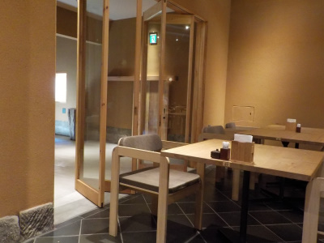

文吉たまきで肉うどんを食べました。
2020/08/30
木綿街道にできたうどん屋さん「文吉たまき」に行きました。
今まで木綿街道のお店に行くときは温泉ゆらり近くの駐車場から歩いていたんですが、このお店は駐車場が２５台分もあるので歩かなくていいので楽ちんです。
街並みを歩かないのは寂しいですが、他のお店に行くときは歩くのでいいかな。

駐車場が25台分あるだけあって、お店は広かったです。
混んでいると嫌なので時間をずらして遅めのお昼に行ったんですが、テーブルに付くにも順番待ち。お料理が出るまでも時間が掛かりました。
人気があるので仕方ないですね。でも店内は広々しているので、新型コロナが不安なんて気分にはなりませんでした。
家族と行くってよりも、友達とのんびりおしゃべりしながら食事するのにいいかなと思いました。
洋風のうどんと和風のうどんメニューがあったんですが、私は和風の肉うどんを食べました。
肉うどんはどこで食べても甘くて美味しいですね。外さない味だなーと実感しながら食べました。（ここの肉うどんはお肉が美味しいって思いました。）
お店の特徴である文吉うどんですが、麺に卵が入っているのが特徴だそうです。よくよく噛んで味わって食べると、小麦感が少なくマイルドで食べやすいって思いました。
でも普段うどんってあんまり噛まずに食べるので、味わって食べてないなーって思いました。
後、うどんは手作り感のある乱切りでした。丸いの平べったいの細いの太いの色々です。私はこの麺は和風よりも洋風の方が合うんじゃないかと思いました。次回行く機会があったら洋風うどんを注文しようと思います。